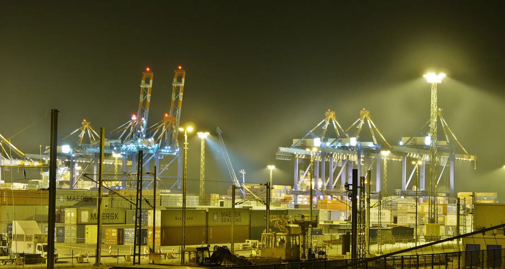
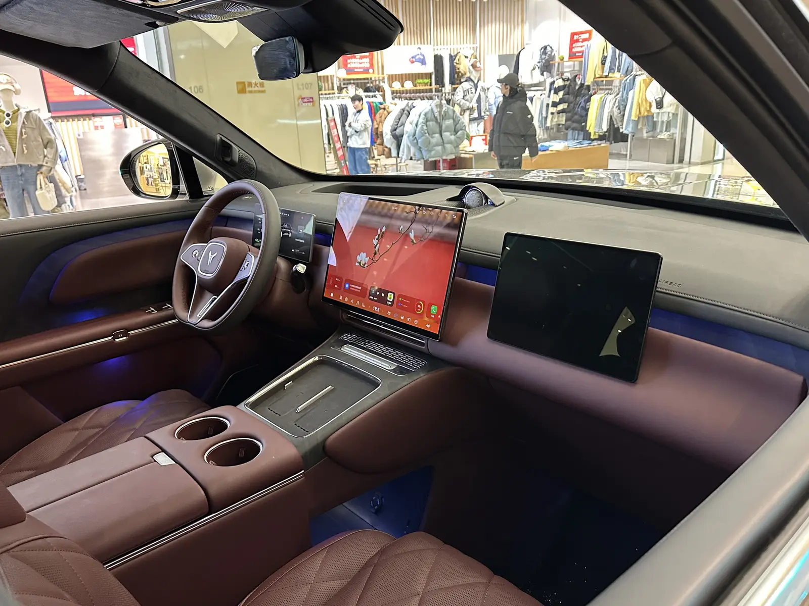
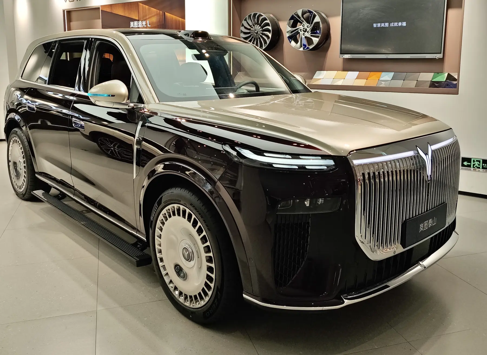
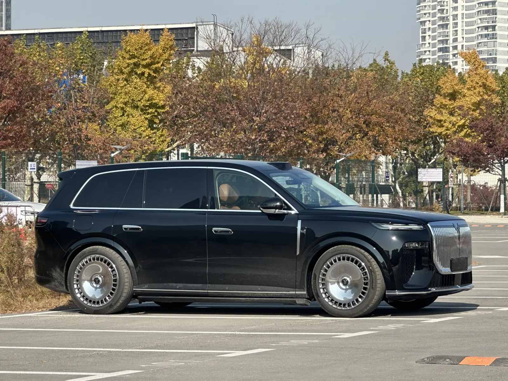
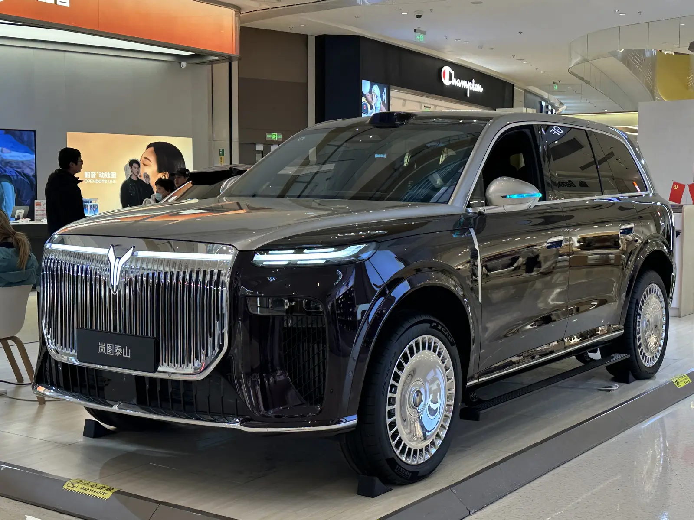

Řidiči a firmy
Chcete konkrétní čínské auto, které tu nikdo nenabízí. Pošlete model a výbavu, my vrátíme nabídku s cenou a termínem. Převezmete vůz s českou SPZ.
- Konkrétní model a výbava
- Nabídka s cenou a termínem
- Předání s českou SPZ
Dovoz aut z Číny · Ostrava
Vozy čínských značek kupujeme na vlastní firmu, přivezeme je v kontejneru přes Bremerhaven, proclíme, necháme schválit a zaregistrovat. Vy převezmete hotové auto.
01 — Cesta vozu
Takhle může cesta vypadat: kolem Afriky přes 26 tisíc kilometrů po moři do Bremerhavenu, pak po souši do Ostravy. Posuňte stránku a sledujte kontejner.
5–7 týdnůna moři
Kontejner sledujeme po celou cestu.
02 — Jak dovážíme
Každý krok má svůj výstup. Víte, kde vůz je a co se s ním právě děje.
Napíšete, jaký vůz chcete: model, výbavu, barvu. Prověříme cenu, dostupnost a co bude potřeba ke schválení v Česku.
VýstupNabídka s cenou a termínem
Vůz kupuje Casa Buena na svou firmu, takže dovozcem jsme my. Vy neřešíte zahraniční platbu ani celní papíry.
VýstupKupní doklad
Vůz se v Číně naloží do kontejneru a loď ho poveze do Bremerhavenu. Na moři je zhruba 5 až 7 týdnů.
VýstupKonosament (B/L)

V Bremerhavenu se kontejner vyloží a pokračuje po souši v tranzitu T1. Clo a DPH se tak platí až v Česku.
VýstupTranzitní doklad T1
Vůz proclíme v Česku. Zaplatíme clo i dovozní DPH a vůz je propuštěn do volného oběhu v EU.
VýstupRozhodnutí o propuštění do volného oběhu
Doložíme technickou dokumentaci a vůz projde schválením technické způsobilosti jednotlivě dovezeného vozidla.
VýstupTechnický průkaz
Kde to model dovolí, přepneme systém do češtiny nebo angličtiny a nastavíme evropské aplikace.
VýstupSystém v češtině nebo angličtině

Vůz zaregistrujeme a dostane českou SPZ. Pak ho předáme vám. Prodejcům dodáváme vozy připravené k registraci.
VýstupOsvědčení o registraci a SPZ
03 — Například
Velké SUV značky Voyah z koncernu Dongfeng. Takový vůz pro vás koupíme v Číně a dovezeme až k registraci.



Ilustrační fotografie z Wikimedia Commons.
04 — Pro koho
Chcete konkrétní čínské auto, které tu nikdo nenabízí. Pošlete model a výbavu, my vrátíme nabídku s cenou a termínem. Převezmete vůz s českou SPZ.
Rozšiřte nabídku o čínské modely bez vlastního dovozu. Dodáme vozy proclené a technicky schválené, připravené k registraci a prodeji.
05 — Firma
Auta dovážíme na vlastní firmu, takže clo, DPH i papíry jdou přes nás. Všechny údaje si ověříte ve veřejných rejstřících.
06 — Kontakt
Model, výbava, barva, termín. Ozveme se s nabídkou.
Casa Buena s.r.o. · Partyzánské náměstí 1738/3 · 702 00 Ostrava